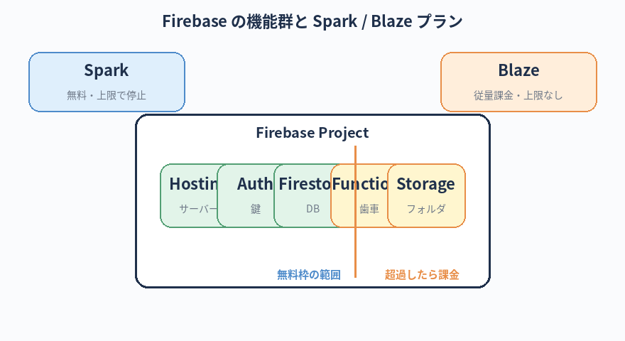

Firebase が何のサービスか、何ができるかを理解する。
GitHub Pages との違いを把握する。
簡易的に Firebase Hosting を使ってみる流れを体験する（実際の本番構築は別途プロジェクトで）。
関連ツール解説：Firebase
この章のゴール
Firebase って何？
Firebase（ファイアベース）は、Google が提供しているWeb・モバイルアプリの土台になる便利機能の詰め合わせのようなサービスです。 「BaaS（Backend as a Service）」と呼ばれるカテゴリに入ります。
主な機能（一部）：
- Hosting — Web サイトを公開できる（GitHub Pages の代替候補）
- Authentication — ログイン機能を簡単に実装できる
- Firestore / Realtime Database — 簡易データベース
- Functions — サーバーサイドで動かす小さなプログラム
- Storage — 画像や動画ファイルの保管
本章では Hosting だけ触ります。他は将来必要になった時に学べばOK。

絶対に覚える：Firebase の用語
Firebase は機能が多いので用語も多めですが、本書で扱うのは Hosting だけ。「プロジェクト／Hosting／プラン／デプロイ／CLI」の5つを押さえれば十分です。
Projectプロジェクト
- 一言で
- Firebase で作る1つのサービス単位。1案件＝1プロジェクトが基本
- たとえると
- 「Firebase 上のフォルダ」みたいなもの。中に Hosting / DB / Functions など複数機能を入れていく
- 関連
- Console / プロジェクトID
Hostingホスティング
- 一言で
- HTML / CSS / JS のファイルをインターネット上で公開する機能
- たとえると
- GitHub Pages の Firebase 版。本書ではこれだけ使う
- 関連
- deploy / 独自ドメイン
Firebase CLIファイアベース シーエルアイ
- 一言で
- ターミナルから Firebase を操作するためのコマンド（
firebase） - たとえると
- Firebase の Web 画面でやれることを、コマンド1行で済ませられるツール。
npm install -g firebase-toolsで導入 - 関連
- firebase init / firebase deploy
Deployデプロイ／公開
- 一言で
- 手元のファイルをサーバーにアップロードして実際に公開する操作
- たとえると
- 本のゲラを「印刷所に渡して印刷開始」する瞬間。
firebase deploy一発で終わる - 関連
- Hosting URL / プレビュー
Spark Planスパークプラン
- 一言で
- Firebase の無料プラン。上限を超えると停止する（課金されない）
- たとえると
- 練習・小規模公開向けの安全プラン。本書の練習はこれを使う
- 関連
- Blaze / 無料枠
Blaze Planブレイズプラン
- 一言で
- Firebase の従量課金プラン。使った分だけ料金が発生する
- たとえると
- 水道や電気と同じ「使った分だけ請求」。知らずに切り替えると事故る。本番運用で必要になった時、慎重に切り替える
- 関連
- 無料枠 / 従量課金 / 請求アカウント
つまずきポイント：Spark プラン（無料）と Blaze プラン（従量課金）の選び方
Firebase で初心者が一番怖いのが「気づかないうちに有料プランに切り替わって請求が来る」事故です。 GitHub の Public/Private と同じくらい大事な判断ポイントなので、ここでしっかり整理します。
2つのプランの違い
| 項目 | Spark（無料） | Blaze（従量課金） |
|---|---|---|
| 料金 | 完全無料 | 使った分だけ請求 |
| 無料枠を超えたら | サービスが停止する（課金されない） | そのまま課金される |
| 使える機能 | Hosting, Firestore（少量）, Auth など主要機能はOK | 全部使える（外部 API 連携など含む） |
| 本書の練習用途 | これで完全にOK | 不要 |
本書では Spark を使う理由
- 練習で使う規模では無料枠の中で完結する
- 万が一何かのバグで大量アクセスが来ても、勝手に課金されない安心感
- 本番運用が必要になった時、慎重に Blaze に切り替えればよい
Blaze プランが必要になる場面
- 外部の API（OpenAI など）と連携する Functions を作りたい：これが Blaze 必須の最大の理由
- Firestore で大量のデータを扱う（無料枠を超える）
- 商用サービスを本格運用する
Blaze プランに切り替える時は、必ず予算上限（Budget Alert）を設定してください。
設定しないと、攻撃や不具合で大量アクセスが来た時に請求が天井知らずに膨らむ事故が実際に起きています。
設定しないと、攻撃や不具合で大量アクセスが来た時に請求が天井知らずに膨らむ事故が実際に起きています。
Blaze プランへの切替は、必ず居村に相談してから行ってください（第1章の「お約束」参照）。
切替＋予算上限設定は、社内のエンジニアと一緒に進めるのが安全です。 請求アカウントの紐付けや、退職時の引き継ぎにも関わる重要事項です。
切替＋予算上限設定は、社内のエンジニアと一緒に進めるのが安全です。 請求アカウントの紐付けや、退職時の引き継ぎにも関わる重要事項です。
Firebase の Blaze プランで、月の予算上限を 1,000 円に設定する手順を初心者向けに教えてください。
上限を超えたら通知が来るようにもしたいです。
上限を超えたら通知が来るようにもしたいです。
GitHub Pages と Firebase Hosting の違い
| 項目 | GitHub Pages | Firebase Hosting |
|---|---|---|
| 料金 | 無料（個人レベル） | 無料枠あり、超えると従量課金 |
| セットアップ難度 | かなり簡単 | 少し手順が増える |
| 独自ドメイン | OK（無料） | OK（無料） |
| 動的機能との連携 | 静的ファイルのみ | Functions と組み合わせて動的にできる |
| 適している案件 | 個人サイト、ドキュメント、ポートフォリオ | 会員機能・データ保存が必要な Web アプリ |
シンプルな静的サイトなら GitHub Pages で十分。 会員ログインや書き込み機能が必要になった時、Firebase の出番が来ます。
Step 1：Firebase アカウントを作る
- Google アカウントを用意する（普段使っているので OK）
- ブラウザで
https://firebase.google.comにアクセス - 「コンソールへ移動」または「Get started」を押す
- 「プロジェクトを追加」を押す
- プロジェクト名を入力（例：
hello-world-test） - Google Analytics は無効にしてOK（練習用なので）
- プロジェクトが作成される
会社の業務で使う場合、個人の Google アカウントではなく、会社支給アカウントを使ってください。
料金請求のひも付けや、退職時の引き継ぎ問題を防ぐためです。
個人アカウントで作って後から移管するのは大変です。
Step 2：Firebase CLI をインストール
ターミナルから Firebase を操作するためのコマンドを入れます。
npm install -g firebase-tools
動作確認：
firebase --version
Step 3：Firebase にログイン
firebase login
ブラウザが開き、Google アカウントでのログインを求められます。 Firebase で使ったアカウントを選んでください。
Step 4：Hosting を初期化
第10章まで作った hello-world フォルダで作業します。
cd ~/dev/hello-world
firebase init hosting
対話形式で質問されます。最初は次の選択でOK：
- 「Use an existing project」→ 先ほど作ったプロジェクトを選ぶ
- 「What do you want to use as your public directory?」→ 「
.」（ピリオド）または「public」 - 「Configure as a single-page app?」→ N（ノー）
- 「Set up automatic builds with GitHub?」→ N（ノー、初回はスキップ）
- 「File ... already exists. Overwrite?」（index.html 上書き確認）→ N（既存を残す）
質問の意味が分からない時は、いったん N（No）を選ぶか、Claude に「これって何を聞かれてる？」とコピペして聞いてしまいましょう。
Step 5：デプロイ（公開）
firebase deploy
1〜2分で完了し、最後に「Hosting URL: https://<プロジェクト名>.web.app」が表示されます。 そのURLにアクセスすると、あなたの Hello World が世界に公開されています。
2回目以降の更新
ファイルを直したら：
firebase deploy
これだけ。GitHub Pages とほぼ同じくらい手軽。
「使う／使わない」の判断目安
- 静的ページしか要らない：GitHub Pages で十分
- 独自ドメインを使いたい：どちらでもOK
- そのうち会員機能・お問い合わせフォーム送信などが要りそう：Firebase 一択
- 社内で既に Firebase 案件がある：Firebase に揃えると人にも頼みやすい
Poolside の他案件（特に fetp.jp など）が Firebase 構成のようです。
将来そちらにアサインされる可能性も踏まえると、ひととおり触れておくのは無駄になりません。
注意点：料金の罠
Firebase は無料枠を超えると自動的に課金される仕組み（Pay-as-you-go プラン）に切り替わる場合があります。
練習用プロジェクトでは Spark プラン（無料・上限ありで止まる） のままにしておきましょう。
本番運用に切り替える時は、必ず社内の経理・情シスに相談してください。
練習用プロジェクトでは Spark プラン（無料・上限ありで止まる） のままにしておきましょう。
本番運用に切り替える時は、必ず社内の経理・情シスに相談してください。
困った時の AI 相談例
firebase deploy を実行したらこういうエラーが出ました。初心者向けに原因と対処を教えてください。
[エラー全文を貼り付け]
Firebase Hosting で公開したサイトを、独自ドメイン（poolside.life など）に紐付けるにはどうすればいいですか？
手順をステップごとに教えてください。
手順をステップごとに教えてください。
本章のチェックリスト
すべてチェックを付けると「次の章へ」のリンクが解放されます。
チェック 0 / 4
次の章へ
お疲れさまでした。実装まわりは一通り体験できました。 次の最終章では、これまでに出てきたつまずきポイントを横断的にまとめます。